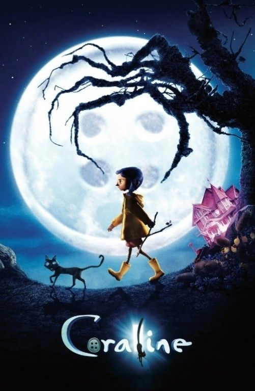

Coraline y la puerta secreta (2009) es una película de animación stop-motion estadounidense del año 2009, escrita y dirigida por Henry Selick (director de El extraño mundo de Jack, Jim y el Durazno Gigante y Monkeybone) y producida por Claire Jennings. Está basada en una novela homónima de Neil Gaiman, siendo el primer largometraje del estudio Laika.
Fue nominada al premio Óscar en la categoría de Mejor película animada. Actualmente se le considera una película de culto y una de las mejores cintas de animación jamás realizadas
